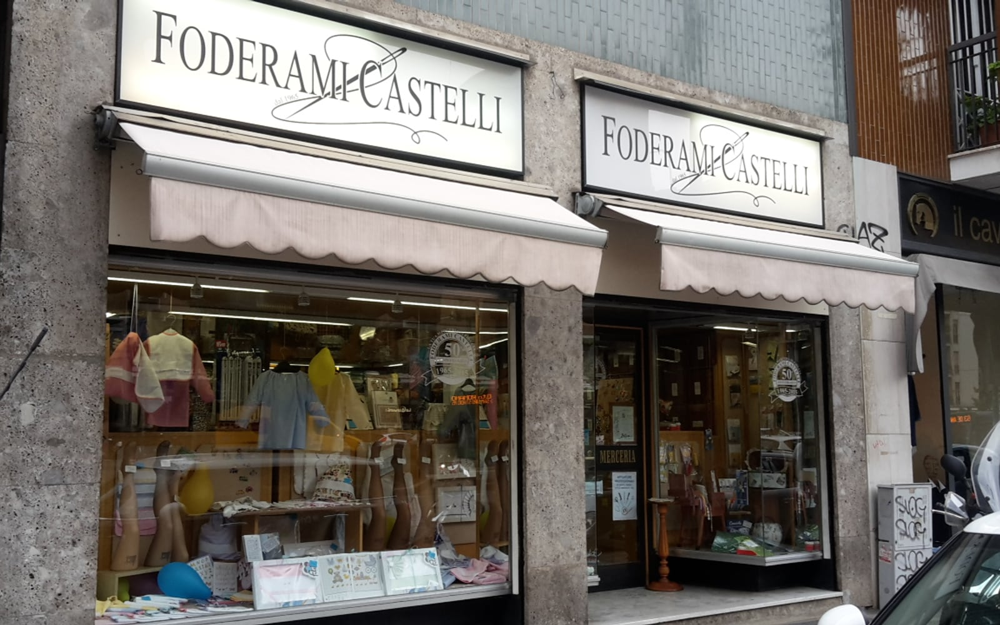
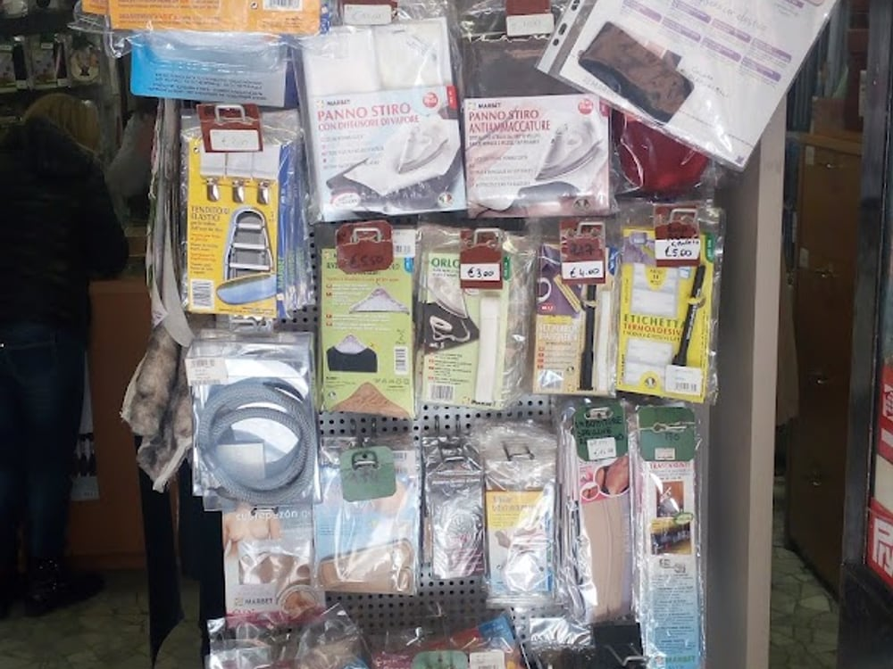
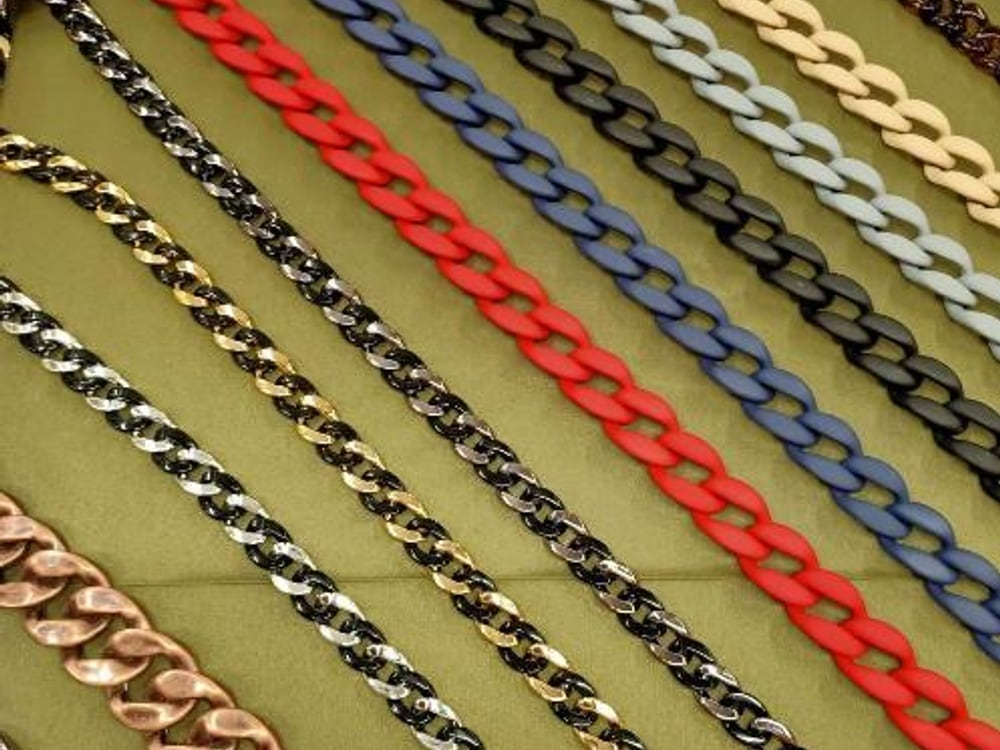
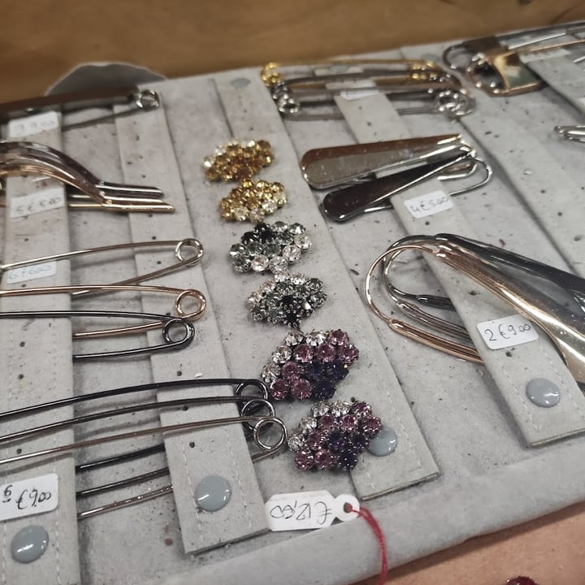
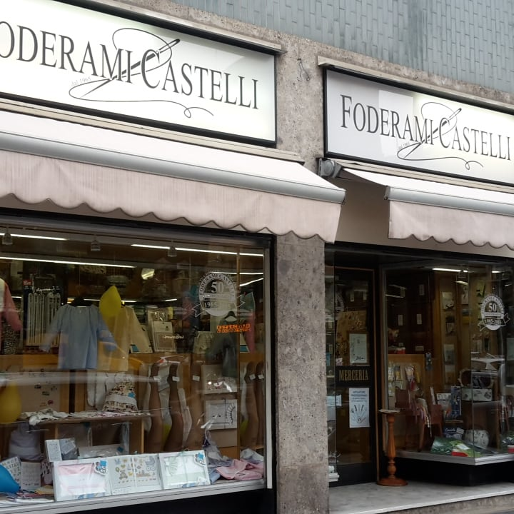
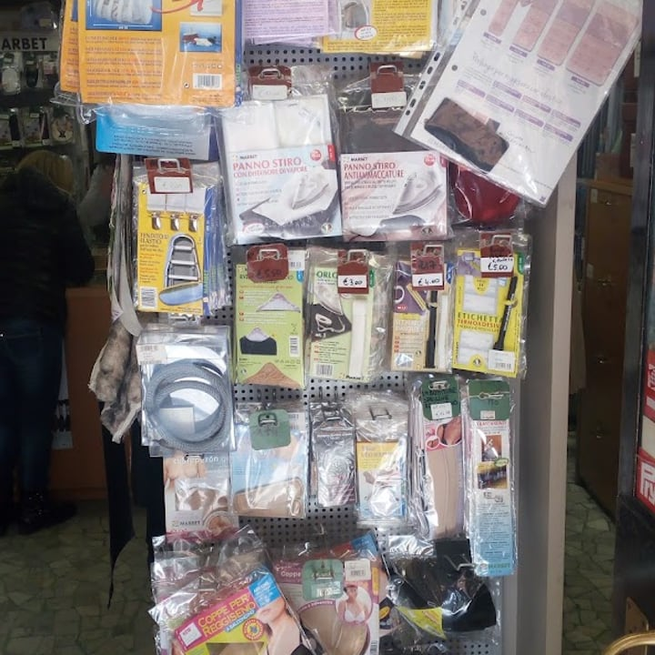
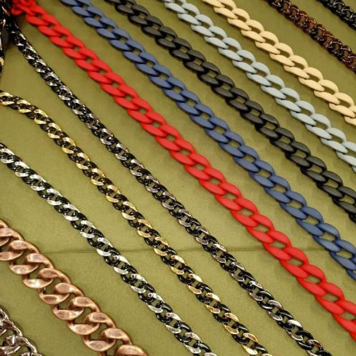
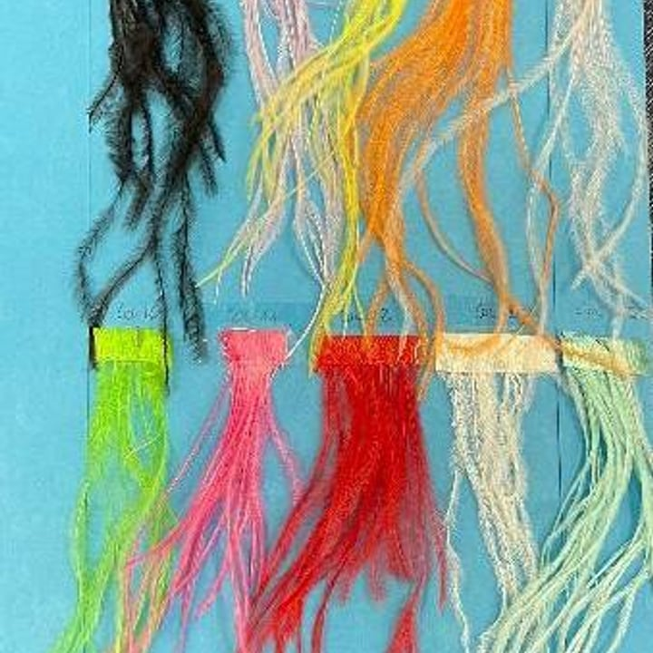
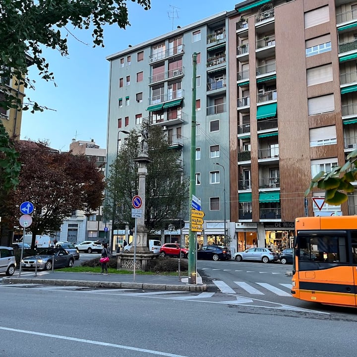

4,0 · 126 recensioni · Google
La merceria di Piazza De Angeli, dal 1965
Bottoni gioiello, passamanerie, pizzi, filati e lane: la merceria storica dove si trova tutto — per chi cuce, ricama e crea.
La caverna del merciaio
Chi entra lo dice sempre: è un paradiso. Scaffali fino al soffitto, cassetti che non finiscono mai — per chi cuce, ricama, lavora a maglia o si diverte col fai-da-te.
«È veramente un paradiso: si trova tutto per chi ama taglio e cucito.»

La punta di diamante
La selezione di bottoni gioiello e spille ornamentali è quella che fa dire «altissimo livello». E poi passamanerie, nastri e catene decorative per dare a un capo il dettaglio che lo cambia.

Filati, lane & uncinetto
Filati e lane per lavorare ai ferri e all'uncinetto, cotoni per il ricamo, nappe e frange per rifinire. Un muro di colore da cui partire per il prossimo progetto — con il consiglio di chi ne ha viste tante.
Dal 1965
Foderami Castelli è una merceria storica: generazioni che gestiscono la bottega, con Simona e Stefano dietro il banco. Sessant'anni di esperienza in un mestiere fatto di dettagli.
Quella competenza è il valore aggiunto: qui non trovi solo il prodotto, trovi chi sa consigliarti quello giusto per il tuo lavoro.
La merceria






Dicono di noi
«Merceria di altissimo livello, selezione di spettacolari bottoni gioiello e spille ornamentali. La punta di diamante di questo storico negozio sono Simona e Stefano, con competenza.»
Francesca A. · Google
«È veramente un paradiso questo posto! Si trova tutto per chi ama taglio e cucito: lana, ferri e uncinetto, e molto altro.»
Noemi C. · Local Guide
«Merceria fornitissima, si trova senz'altro quello che si cerca, unito alla longeva esperienza dei proprietari, prodighi di consigli.»
Davide G. · Local Guide
«Un negozio meraviglioso, fornito di ogni bene che può servire per il fai-da-te.»
Andrea G. · Google
Dove & orari
Via Vittoria Colonna 53, angolo Piazza Ernesto De Angeli, 20146 Milano · sopra la M1 De Angeli.
—
| Lunedì | 15:00–19:00 |
|---|---|
| Martedì | 09:00–13:00 · 15:00–19:00 |
| Mercoledì | 09:00–13:00 · 15:00–19:00 |
| Giovedì | 09:00–13:00 · 15:00–19:00 |
| Venerdì | 09:00–13:00 · 15:00–19:00 |
| Sabato | 09:00–13:00 · 15:00–19:00 |
| Domenica | Chiuso |
Domande frequenti
Bottoni e bottoni gioiello, passamanerie, pizzi e nastri, filati e lane, uncinetto e ferri, cerniere, elastici e collant, borse tessute a mano e teleria. Tutto per taglio, cucito, ricamo e fai-da-te.
Sì: dalla minuteria ai bottoni gioiello e alle spille ornamentali. La selezione è la nostra punta di diamante — difficile non trovare quello che cerchi.
Dal 1965. Foderami Castelli è una merceria storica nel cuore di Piazza De Angeli, con la competenza di generazioni che gestiscono la bottega.
Lunedì 15:00–19:00; da martedì a sabato 9:00–13:00 e 15:00–19:00. Domenica chiuso.
In Via Vittoria Colonna 53, all'angolo di Piazza Ernesto De Angeli a Milano. Telefono 02 462730.